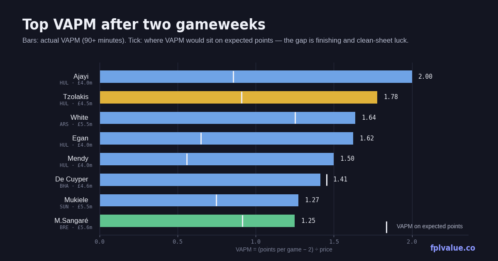

Two gameweeks in: where the points per pound are
The weekly value report ranks every player on three measures from the dashboard — VAPM, points per million and points against expected — and picks out what the numbers say. Two gameweeks is a tiny sample, so treat this as a watchlist, not a transfer list. Full definitions are on the metrics page.

Top five by VAPM 90+ minutes
VAPM is points per game minus the two you get for turning up, divided by price. It rewards cheap players who actually return.
| Player | Pos | Price | PPG | VAPM | xPts | Δ | Own |
|---|---|---|---|---|---|---|---|
| Ajayi HUL | DEF | £4.0m | 10.0 | 2.00 | 10.8 | +9.2 | 5.0% |
| Tzolakis HUL | GKP | £4.5m | 10.0 | 1.78 | 12.2 | +7.8 | 5.0% |
| White ARS | DEF | £5.5m | 11.0 | 1.64 | 8.9 | +2.1 | 7.0% |
| Egan HUL | DEF | £4.0m | 8.5 | 1.62 | 9.2 | +7.8 | 3.0% |
| Mendy HUL | DEF | £4.0m | 8.0 | 1.50 | 8.5 | +7.5 | 5.0% |
Four of the five are Hull City defenders, and the pattern in the Δ column tells you why to be careful. Hull have kept two clean sheets against 3.1 expected goals conceded — the model gave them roughly a one-in-four chance of each. Ajayi's 20 points came with a goal from 0.52 xGI plus those two clean sheets; his expected total is 10.8. That is still a strong return for £4.0m, and Hull's defenders are worth owning at that price if they keep starting, but the 2.00 VAPM will roughly halve even if they play exactly as well.
The interesting name is Ben White, and the caveat is that Arsenal have only one match in this dataset (the Villa game was pulled before it was played). One assist and a clean sheet against 0.20 xGC is a real performance, not luck, and Arsenal's fixtures from GW6 are gentle. At £5.5m with 7% ownership he's the one on this list I'd expect to still be here in a month.
Top five by points per million
The simpler measure: total points divided by price, no baseline removed. It skews toward cheap regulars who have played every minute.
| Player | Pos | Price | Pts | PPM | xGI | Δ | Own |
|---|---|---|---|---|---|---|---|
| Ajayi HUL | DEF | £4.0m | 20 | 5.00 | 0.52 | +9.2 | 5.0% |
| Tzolakis HUL | GKP | £4.5m | 20 | 4.44 | — | +7.8 | 5.0% |
| Egan HUL | DEF | £4.0m | 17 | 4.25 | 0.00 | +7.8 | 3.0% |
| Mendy HUL | DEF | £4.0m | 16 | 4.00 | 0.29 | +7.5 | 5.0% |
| De Cuyper BHA | DEF | £4.6m | 17 | 3.70 | 1.76 | −0.4 | 12.0% |
Same Hull quartet at the top, same caveat. The name to notice is fifth: Maxim De Cuyper is the only player in either table whose points match his expected points. Seventeen points from a goal, an assist and a clean sheet, on 1.76 xGI — the highest of any defender in the league — and an xPts of 17.4. A £4.6m defender who is attacking like a midfielder and, unlike the Hull players, has done it in front of a defence that's conceded roughly what it should. Ownership has already climbed to 12% with 281,000 transfers in this week; at £4.6m the price rise is coming regardless.
Just outside the five, Mathias Sangaré (BRE, £5.6m, 10.6% owned) has 18 points from two assists and a clean sheet with an xPts of 14.2 — another whose numbers hold up under inspection, and Brentford's next two are Bournemouth away and Chelsea at home before a kinder run.
Under-performers: points lagging expected
Now the list that matters for transfers in. These are the players with the biggest gap between what they've scored and what their chances say they should have scored. Big negative Δ with high xGI is the buy signal; big negative Δ with low xGI just means a defender who's been unlucky with clean sheets.
| Player | Pos | Price | Pts | xPts | Δ | xGI | Own |
|---|---|---|---|---|---|---|---|
| Thiago BRE | FWD | £8.0m | 2 | 9.5 | −7.5 | 1.89 | 15.4% |
| Rúben Dias MCI | DEF | £5.5m | 4 | 10.2 | −6.2 | 0.80 | 1.8% |
| O'Reilly MCI | DEF | £6.5m | 4 | 9.6 | −5.6 | 0.52 | 19.9% |
| Nketiah CRY | FWD | £5.5m | 3 | 8.6 | −5.6 | 1.54 | 0.5% |
| Mbeumo MUN | MID | £8.0m | 13 | 18.1 | −5.1 | 2.70 | 32.3% |
| Murillo NFO | DEF | £5.5m | 5 | 10.0 | −5.0 | 0.46 | 1.6% |
| Isak LIV | FWD | £9.0m | 10 | 14.4 | −4.4 | 2.09 | 16.2% |
Thiago is the clearest case in the league. Two points from 172 minutes, and 111,000 managers sold him this week. But 1.89 xGI is the fourth-highest of any forward, and the model has him on 9.5 expected points — about what João Pedro's 20 points look like once you strip the finishing. Brentford's fixtures aren't easy (BOU, CHE next) but a striker generating a goal's worth of chances per game at £8.0m and falling in price is what a value list is for. If he's still cheap after the international break, that's when to move.
Mbeumo is the same story at a much higher ownership. Thirteen points is fine, but 2.70 xGI is the second-highest in the league behind Bruno Fernandes, and his 18.1 xPts would put him fourth overall. The 32% who own him have the right player and are being told otherwise by the scoreboard; the 282,000 who sold this week are likely to regret it. Isak is a milder version of the same — 2.09 xGI, one goal.
The two City defenders and Murillo are a different kind of under-performance. Their xGI is modest; the gap is almost entirely clean-sheet luck (City conceded three from 1.3 xGC across the two games). That's real information — City's defence is better than two goals conceded in each game suggests — but it points at the whole unit rather than a specific player. Dias at 1.8% ownership is the cheapest way in if you believe it. Nketiah's numbers are genuinely good for £5.5m, but he's played 122 minutes across two games and the starting role isn't secure.
Methodology: VAPM = (points per game − 2) ÷ price. PPM = points ÷ price. xPts swaps goals, assists, clean sheets and goals conceded for their expected equivalents; appearance, bonus, saves, cards and DefCon are as scored. Δ = points − xPts. All figures from the FPL API after GW2, minimum 90 minutes. Arsenal's GW2 fixture was not included in this snapshot. Full definitions.